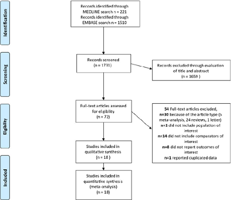
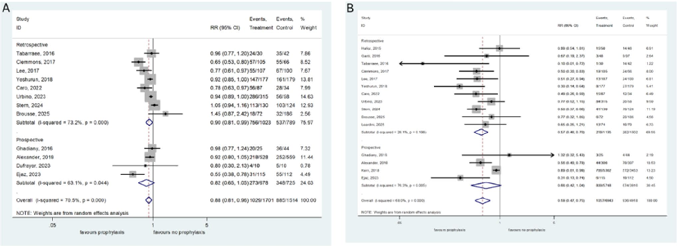

本ページで使用する略語一覧
| 略語 | 正式名称 — 日本語訳 |
| FQ | Fluoroquinolone — フルオロキノロン系抗菌薬 |
| FN | Febrile Neutropenia — 発熱性好中球減少症 |
| HSCT | Hematopoietic Stem Cell Transplantation — 造血幹細胞移植（造血細胞移植） |
| Allo-HSCT | Allogeneic HSCT — 同種造血幹細胞移植 |
| Auto-HSCT | Autologous HSCT — 自家造血幹細胞移植 |
| AML | Acute Myeloid Leukemia — 急性骨髄性白血病 |
| ALL | Acute Lymphoblastic Leukemia — 急性リンパ性白血病 |
| BSI | Bloodstream Infection — 血流感染症（菌血症） |
| MDR | Multidrug-Resistant — 多剤耐性 |
| AMR | Antimicrobial Resistance — 抗菌薬耐性 |
| RCT | Randomized Controlled Trial — ランダム化比較試験 |
| RR | Risk Ratio — リスク比 |
| CI | Confidence Interval — 信頼区間 |
| ASCO | American Society of Clinical Oncology — 米国臨床腫瘍学会 |
| IDSA | Infectious Diseases Society of America — 米国感染症学会 |
| ESMO | European Society for Medical Oncology — 欧州臨床腫瘍学会 |
| LVFX | Levofloxacin — レボフロキサシン（クラビット） |
| CPFX | Ciprofloxacin — シプロフロキサシン |
| EARS-Net | European Antimicrobial Resistance Surveillance Network — 欧州AMR監視ネットワーク |
| PRISMA | Preferred Reporting Items for Systematic Reviews and Meta-Analyses — SR・メタ解析報告基準 |
SECTION 1 フルオロキノロン予防投与とは何か：背景と論争
化学療法誘発性好中球減少症と感染リスク
化学療法による好中球減少症と粘膜炎は、細菌・真菌による侵襲性感染症への感受性を著しく高める。この感染リスクに対し、FQによる抗菌薬予防投与が長年議論されてきた。特に、血液悪性腫瘍患者や造血幹細胞移植（HSCT）受療者を対象とした高リスク群においては、FNの予防と重篤感染症の抑制という潜在的便益と、AMR（抗菌薬耐性）出現リスクという抗菌薬スチュワードシップ上の懸念が拮抗している。
低リスク患者（固形腫瘍、好中球減少期間7日未満）に対するFQ予防は一般に不要とされている。一方、AMLや骨髄破壊的前処置を伴うHSCTなど高リスク群への適用は、ガイドライン間でも見解が分かれ、エビデンスの整理が求められていた。
3つの主要ガイドラインの立場
| ガイドライン | 年・学会 | 高リスク患者への推奨 |
|---|---|---|
| ASCO/IDSA | 2018年 | 推奨：好中球数 <0.1×10⁹/L が7日以上持続する深部・遷延性好中球減少症（AML・MDS・骨髄破壊的前処置後HSCT）に対してFQ予防を推奨 |
| ESMO | 2016年 | 非推奨：高リスク患者においても、ルーチンのFQ予防投与を推奨しない。感染予防戦略と早期感染管理を重視 |
| Australian | 2011年 | 非推奨：高リスク患者を含むすべての患者に対して、ルーチン予防投与を推奨しない |
このガイドライン間の対立は、FQ予防投与の利益と耐性菌誘導リスクのバランスをどう解釈するかに起因している。2006年のLeibovicci らは、Bucaneve ら（2005年）の大規模影響力のある研究を根拠に、グラム陰性菌のFQ耐性率が約20%の集団においてもFQ予防は有効であると示唆していた。本メタ解析は、直近10年間（2015〜2025年）の新たなエビデンスを集積し、この問題に再検討を加えた。
SECTION 2 研究デザインと選択基準
研究目的と検索方法
本研究はPRISMAガイドラインに準拠したシステマティックレビュー＆メタ解析である（PROSPERO登録番号：CRD42024520913）。MEDLINE・EMBASE にて2015年1月〜2025年12月31日までに発表された原著論文を、2名の独立した研究者（FA、MM）が検索した。検索キーワード：「fluoroquinolones」「ciprofloxacin」「levofloxacin」「antibiotic prophylaxis」「febrile neutropenia」「haematological malignancies」「haematopoietic stem cell transplant」。
組み入れ基準・除外基準
| 組み入れ基準 | 除外基準 |
|---|---|
|
① 実験・観察研究の原著データを提示している ② FQ予防あり vs なし の臨床アウトカムを比較している ③ 高リスク好中球減少症（急性白血病・多発性骨髄腫高用量化療後・HSCT後）の患者 ④ 全死亡率・BSI率・FNエピソード率・FQ耐性菌検出率のうち少なくとも1つを報告 ⑤ 10例以上を含む ⑥ 2015〜2025年に英文で発表された完全論文 |
● メタ解析・レター・レビュー・学会抄録・エディトリアル ● 重複論文 ● FQ以外の抗菌薬予防を対象としたもの ● 2015年以前に発表されたもの（Mikulska ら 2018年のメタ解析が2014年までをカバー済み） |
主要・副次アウトカム
| アウトカム | 評価時期・詳細 |
|---|---|
| 主要：全死亡率 | 1ヶ月・6ヶ月・12ヶ月のいずれかの時点 |
| 副次①：FNエピソード率 | 30日以内または好中球回復まで |
| 副次②：BSI率 | 30日以内または好中球回復まで |
| 副次③：FQ耐性菌検出率 | フォローアップ期間中の定着または感染 |
サブグループ解析の設定：（1）FQ耐性高頻度地域（E. coliコミュニティ耐性率 >20% または院内 >30%）を除外した場合、（2）HSCT受療者のみ、（3）急性白血病高用量化療のみ、（4）前向き研究のみ・後ろ向き研究のみ、（5）成人・小児、（6）レボフロキサシン・シプロフロキサシン別。
SECTION 3 文献選択プロセス（PRISMA）
Fig. 1 — PRISMAフローダイアグラム
Figure 1：文献選択プロセス

MEDLINE（n=221）＋EMBASE（n=1510）= 1731件を同定 → 1659件を除外 → 72件をフルテキスト評価 → 54件を除外（5件メタ解析・24件レビュー・1件レター・1件対象集団外・14件比較群なし・8件アウトカム未報告・1件重複）→ 18件を最終解析に組み入れ
文献総数
組み入れた研究数
総患者数
SECTION 4 組み入れ研究の概要
18研究の全体像
組み入れられた18研究は2015〜2025年に発表され、合計12,586例（FQ予防群7,157例 56.9%、非予防群5,429例）を含む。研究デザインはRCT 3件・前向きコホート研究 3件・後ろ向きコホート研究 12件。単施設研究が大半を占め、6件が多施設研究であった。
（全体の56.9%）
（うち1件低バイアスリスク）
コホート研究
対象疾患・地域・使用薬剤の内訳
| 分類 | 内訳 |
|---|---|
| 対象疾患 | 急性白血病（高用量化療） 9件 / HSCT（自家・同種） 7件 / 多発性骨髄腫 1件 / 急性白血病＋HSCT混合 1件 |
| 地域分布 | 欧州 6件 / 北米 5件 / アジア 3件 / 中東 2件 / 南米 1件 / 北アフリカ 1件 |
| 年齢層 | 小児集団のみ 4件 / 成人集団 14件 |
| 使用FQ薬剤 | レボフロキサシン（LVFX）13件 / シプロフロキサシン（CPFX）3件 / LVFX または CPFX 2件 |
| 予防投与期間 | 化学療法開始時または前処置開始時から好中球回復・発熱発現・退院まで。中央値 7〜37日 |
| フォローアップ期間 | 21〜365日（9研究は固定時点 Day 30または Day 100に評価） |
バイアスリスク評価
RCT（3件）：低バイアスリスク 1件（Drayson 2019）、懸念あり 1件（Alexander 2018）、高バイアスリスク 1件（Dufrayer 2023）。観察研究（15件）：低バイアスリスク 7件、中等度バイアスリスク 8件。全体的に観察研究が大半を占め、後ろ向き研究における選択バイアスやデータ不完全性が主要な限界として認識される。
SECTION 5 主要アウトカム：全死亡率
全死亡率：FQ予防あり vs なし に有意差なし
13研究（12,134例）を対象とした全死亡率のメタ解析では、FQ予防群と非予防群の間に有意差は認められなかった（RR 1.04、95% CI 0.79–1.37、p=0.77）。I²=49.4%（低度の異質性、p=0.022）で、ファンネルプロットおよびEgger検定（p=0.77）でも出版バイアスの証拠は認められなかった。
95% CI 0.79–1.37
（主要アウトカム）
（p=0.022）
サブグループ解析：全死亡率
| サブグループ | RR | 95% CI | p値 | I² |
|---|---|---|---|---|
| 全体（13研究） | 1.04 | 0.79–1.37 | 0.775 | 49.4%（p=0.022） |
| 前向き研究のみ（4研究） | 0.79 | 0.64–0.98 | 0.03 | 0%（p=0.561） |
| 後ろ向き研究のみ（9研究） | 1.21 | 0.84–1.74 | 0.296 | 40.3%（p=0.096） |
| FQ耐性高頻度地域（11研究） | 1.16 | 0.89–1.50 | 0.275 | 27.6%（p=0.18） |
| HSCT受療者（6研究） | 1.25 | 0.81–1.92 | 0.309 | 58.3%（p=0.035） |
| 急性白血病高用量化療（7研究） | 0.77 | 0.48–1.22 | 0.267 | 33.9%（p=0.17） |
| レボフロキサシン（9研究） | 1.26 | 0.94–1.68 | 0.124 | 24.4%（p=0.23） |
| 成人患者（10研究） | 1.02 | 0.76–1.37 | 0.913 | 56.2%（p=0.015） |
| 小児患者（3研究） | 1.25 | 0.51–3.04 | 0.623 | 18.4%（p=0.294） |
SECTION 6 発熱性好中球減少症（FN）エピソード率
FNエピソード率：FQ予防群で有意に低下
12研究（FQ群1,701例 vs 非予防群1,514例）のメタ解析において、FQ予防群では発熱性好中球減少症のエピソード率が有意に低かった（RR 0.88、95% CI 0.81–0.96、p=0.006）。ただし、研究間に有意な異質性が認められた（I²=70.5%、p<0.001）。
95% CI 0.81–0.96
エピソード減少
（p<0.001）
FNエピソード率：サブグループ解析
| サブグループ | RR | 95% CI | p値 | I² |
|---|---|---|---|---|
| 全体（12研究） | 0.88 | 0.81–0.96 | 0.006 | 70.5%（p<0.001） |
| 前向き研究（4研究） | 0.82 | 0.65–1.05 | 0.12 | 63.1%（p=0.04） |
| 後ろ向き研究（8研究） | 0.90 | 0.81–0.99 | 0.028 | 73.2%（p<0.001） |
| HSCT受療者（6研究） | 0.83 | 0.71–0.96 | 0.028 | 86.6%（p<0.001） |
| 急性白血病高用量化療（7研究） | 0.85 | 0.70–1.03 | 0.106（NS） | 76.8%（p<0.001） |
| レボフロキサシン（8研究） | 0.81 | 0.70–0.95 | 0.009 | 77.4%（p<0.001） |
| シプロフロキサシン（3研究） | 0.93 | 0.87–1.00 | 0.063（NS） | 0%（p=0.872） |
| 成人患者（9研究） | 0.90 | 0.82–0.99 | 0.028 | 69.4%（p=0.001） |
| 小児患者（3研究） | 0.74 | 0.49–1.12 | 0.154（NS） | 71.4%（p=0.03） |
SECTION 7 血流感染症（BSI）率
BSI率：FQ予防群で有意に低下（RR 0.59）
15研究（FQ群6,943例 vs 非予防群4,918例）のメタ解析で、FQ予防群では血流感染症の発生率が有意に低かった（RR 0.59、95% CI 0.47–0.75、p<0.001）。有意な異質性も認められた（I²=68.0%、p<0.001）。FQ耐性高頻度地域を除外した感度分析においても結果は維持された（RR 0.55、95% CI 0.46–0.67、p<0.001、I²=26.1%）。
95% CI 0.47–0.75
BSI減少
除外後（p<0.001）
BSI率：サブグループ解析
| サブグループ | RR | 95% CI | p値 | I² |
|---|---|---|---|---|
| 全体（15研究） | 0.59 | 0.47–0.75 | <0.001 | 68.0%（p<0.001） |
| 前向き研究（4研究） | 0.66 | 0.42–1.04 | 0.073（NS） | 76.3%（p=0.005） |
| 後ろ向き研究（11研究） | 0.57 | 0.46–0.70 | <0.001 | 26.1%（p=0.19） |
| FQ耐性高頻度地域（13研究） | 0.55 | 0.46–0.67 | <0.001 | 26.1%（p=0.18） |
| HSCT受療者（8研究） | 0.59 | 0.43–0.82 | 0.002 | 76.9%（p<0.001） |
| 急性白血病高用量化療（8研究） | 0.68 | 0.54–0.85 | 0.002 | 8.4%（p=0.36） |
| レボフロキサシン（10研究） | 0.61 | 0.51–0.72 | <0.001 | 0%（p=0.52） |
| シプロフロキサシン（3研究） | 0.37 | 0.11–1.29 | 0.12（NS） | 62.0%（p=0.07） |
| 成人患者（11研究） | 0.59 | 0.44–0.78 | <0.001 | 71.1%（p<0.001） |
| 小児患者（4研究） | 0.61 | 0.42–0.88 | 0.008 | 40.8%（p=0.17） |
Fig. 3 — フォレストプロット：FNエピソード率（A）と BSI率（B）
Figure 3：フォレストプロット（A: 発熱性好中球減少症エピソード率 / B: 血流感染症率）

A（左）：FNエピソード率。後ろ向き研究 RR 0.90（95%CI 0.81–0.99）、前向き研究 RR 0.82（NS）。全体 RR 0.88（p=0.006）。 / B（右）：BSI率。後ろ向き研究 RR 0.57（95%CI 0.46–0.70）、前向き研究 RR 0.66（NS）。全体 RR 0.59（p<0.001）。いずれも "favours prophylaxis" 方向に効果あり。
SECTION 8 フルオロキノロン耐性菌の検出率
FQ耐性菌検出率：有意差なし、ただし異質性高く解釈に注意
6研究（FQ予防群832例 vs 非予防群649例）を対象としたメタ解析では、FQ耐性菌の検出率に有意差は認められなかった（RR 0.87、95% CI 0.34–2.20、p=0.77）。ただし、研究間異質性が著しく高く（I²=78.0%、p<0.001）、このアウトカムに関する知見の信頼性は低い。
95% CI 0.34–2.20
（6研究・1481例）
（p<0.001）
SUMMARY 第1・2章のキーメッセージ
SECTION 9 なぜ感染症が減っても死亡率が下がらないのか
感染アウトカムと生存率の乖離：耐性菌が鍵を握る
FQ予防投与はFN・BSIといった感染性アウトカムを有意に改善するにもかかわらず、全死亡率の改善をもたらさない。この矛盾を解釈する上で、本論文は以下の仮説を提示している。
FQ予防の効果は主に FQ感受性菌 による感染症の予防に限定される。一方、高リスク好中球減少症患者の死亡率を規定する最大因子は 薬剤耐性菌による感染症—すなわち適切な経験的抗菌薬治療が困難な状況—である。FQ予防は感受性菌による菌血症を減らすことができるが、MDR菌に起因する菌血症・FNには無力であり、後者が生存率に対してより大きなインパクトを持つ。
Martinez-Nadal ら（2020年）は、多剤耐性時代における高リスク好中球減少症患者での菌血症に対する不適切な経験的抗菌薬治療が生存率を著しく悪化させることを報告しており（CID 2020）、このメカニズムを支持する根拠となっている。
SECTION 10 耐性菌リスクと安全性の懸念
FQ使用と多剤耐性菌リスク
Sulis ら（2022年）によるメタ解析（291論文を組み込み）は、FQへの曝露が多剤耐性菌の定着・感染リスクを有意に増大させることを示している（OR 1.78、95% CI 1.68–1.88）。耐性率が低い地域での研究（Drayson 2019、Kern 2018）では、多剤耐性菌の有意な増加は認められなかった。FQ耐性率が高い地域を含む解析でも、本メタ解析でFQ耐性菌検出率の有意な増加は統計的に検出されなかったが、6研究・高異質性という限界があり、確定的な結論は得られない。
FQの主な副作用・安全性リスク
| リスクカテゴリ | 具体的な有害事象 |
|---|---|
| 感染症関連 | Clostridioides difficile 感染症（CDI）リスク増大 |
| 筋骨格系 | 腱障害（腱断裂・腱炎）、筋肉痛 |
| 神経精神系 | せん妄・錯乱・不安・うつ状態・末梢神経障害 |
| 心血管系 | QT延長・不整脈リスク増大 |
| 大血管 | 大動脈解離・大動脈瘤破裂リスクの増大 |
これらの安全性上の懸念は、特に既存の心血管・大血管リスク（例：マルファン症候群、大動脈弁狭窄、高齢者）を持つ患者への予防投与を検討する際に、特に慎重な評価が必要である（Jonville-Béra ら 2025年報告）。
SECTION 11 地域の耐性疫学とガイドラインへの適用
地域別FQ耐性率と予防投与有効性の関係
本メタ解析ではFQ耐性高頻度地域（E. coliのコミュニティ耐性率 >20% または院内 >30%）を除外したサブグループを解析したが、全死亡率・BSI率ともに全体解析と同様の結果が得られた。しかし、著者らはEARS-Net 2024年データとして、イタリアでのE. coliに対するFQ耐性率が34.5%、K. pneumoniaeでは47.7%に達しており、南イタリアの地域報告では60%以上に上る地域もあることを指摘している。
このような極めて高い耐性率が存在する地域では、本メタ解析の結果（FQ感受性菌による感染症抑制は有効）がどこまで適用できるかについて、さらなる慎重な検討が必要である。
臨床的意思決定フレームワーク
本メタ解析の結果を踏まえた、FQ予防投与を検討する際の考慮事項を整理する。ASCO/IDSAガイドライン（2018年）はAML・MDS・骨髄破壊的HSCT前処置後の深部・遷延性好中球減少症（好中球数 <0.1×10⁹/L が7日以上）に対してFQ予防を推奨しているが、その結論は「死亡率への影響はなくとも感染性合併症を減らす」という根拠に基づいている。
患者の感染リスク層別化：好中球数 <0.1×10⁹/L が7日以上継続する予定か（高リスク：AML・MDS・骨髄破壊的HSCT）。低リスク（固形腫瘍・好中球減少7日未満）では予防不要。
自施設の耐性疫学の確認：院内E. coliのFQ耐性率が高い（>30%）場合、予防効果が限定的となる可能性がある。FQ耐性率が低い施設では予防の有益性が相対的に高い。
安全性リスクの評価：大動脈疾患・心血管リスク・既存の神経精神疾患など、FQ関連副作用が問題となる患者因子を確認する。
薬剤の選択：本メタ解析では、レボフロキサシン（500 mg/日）がシプロフロキサシンよりも一貫した有効性を示した。シプロフロキサシンでは統計的有意な感染抑制効果が確認されなかった。
投与期間：化学療法開始時（または前処置開始時）から好中球回復・発熱発現・退院のいずれか早い時点まで。中央値7〜37日（施設・疾患によって異なる）。
本メタ解析の限界
① 18研究中12研究が後ろ向きコホート研究であり、選択バイアスとデータ不完全性の問題がある。② フォローアップ期間が均一でない（一部は30日・100日の固定評価、他は好中球回復・退院まで）。③ FQ耐性菌検出率を報告した研究が6件に限られており、このアウトカムの推定精度が低い。④ 小児患者（4研究）・シプロフロキサシン使用（3研究）のデータが少なく、これらの集団への適用に限界がある。
FQ予防投与を高リスク患者に推奨する根拠の中で最も影響力のある試験の一つが、Bucaneve ら（2005年、NEJM）によるレボフロキサシン vs プラセボのRCTである。この試験はグラム陰性菌FQ耐性率が約20%の集団においてもレボフロキサシン予防が有効であることを示し、Leibovici ら（2006年）が「耐性率20%でも有効」と結論づける根拠となった。本メタ解析は2015年以降の新たな研究に限定されており、Bucaneve 試験は組み込まれていないが、本結論は同じ方向性を示している。なお、2025年以降のFQ耐性率はBucaneve 試験当時と比較して大幅に上昇しており、当時の推奨の解釈には現代的文脈が必要である。
SUMMARY 第3章のキーメッセージ
出典：Onorato L, Macera M, Palamone M, Ambrisi F, Coppola N. Efficacy of fluoroquinolone prophylaxis in high-risk neutropenic patients with haematological malignancies: a systematic review with meta-analysis. Infection. Published online: 27 May 2026.
DOI：https://doi.org/10.1007/s15010-026-02824-9
本資料は教育目的で作成したサマリーです。診断・治療方針の決定には必ず原典を参照してください。
制作：ICU 関谷